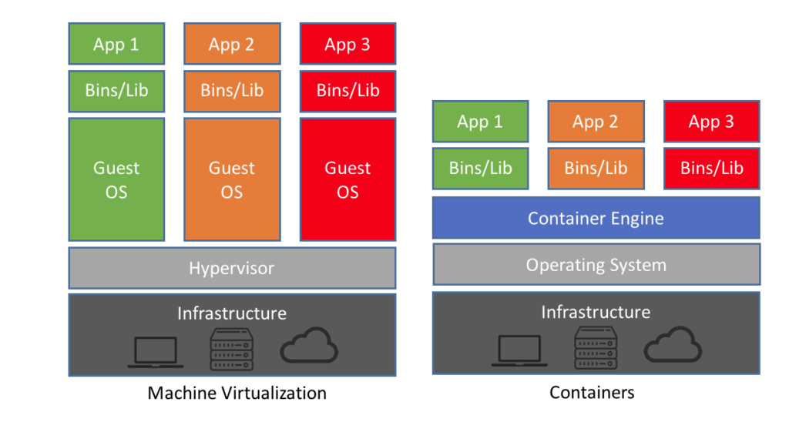

What is Containerization?
Containerization is a type of virtualization that brings virtualization to the operating system(OS) level. Virtualization(link) dissolved the need for extra hardware and containerization dissolved the need for a hypervisor/ extra guest OS.
Containerization eliminates the need for a guest OS in order to utilize the Host OS, so it is a much more efficient type of virtualization. Binaries and libraries that are specific to the application run on the host kernel, so the application is able to run quickly. Each container holds only the binaries and libraries necessary for the application, and all containers share the host OS, which makes containers much more lightweight than the virtual machines. Also the fact that each container holds only the dependencies necessary to run the application ensures that containers do not waste resources. The containers are handled by the containerization layer, which requires a software to enable. The most commonly used container platform is called Docker (link).
Docker is a platform that packages an application and all of its dependencies together in the form of a container. Docker enables applications to be seamlessly moved and accessed in any environment. As previously stated, each application runs in a separate container. This independence provides confidence to developers that the applications they build will not interfere with one another. These containers are portable, so when a developer is ready to ship off their application to the Quality Assurance team for testing, the team does not have to install all of the dependent software required for the application. Therefore the work environment is consistent and reliable throughout. Docker containers also make it easy to scale systems, which simplifies deployment processes.

Three important terms to know when using Docker are Dockerfile, Docker Image, and Docker Container. Edureka.co defines them below:
Dockerfile: A Dockerfile is a text document which contains all the commands that a user can call on the command line to assemble an image. So, Docker can build images automatically by reading the instructions from a Dockerfile. You can use docker build to create an automated build to execute several command-line instructions in succession.
Docker Image: In layman terms, Docker Image can be compared to a template which is used to create Docker Containers. So, these read-only templates are the building blocks of a Container. You can use docker run to run the image and create a container. Docker Images are stored in the Docker Registry. It can be either a user’s local repository or a public repository like a Docker Hub which allows multiple users to collaborate in building an application.
Docker Container: It is a running instance of a Docker Image as they hold the entire package needed to run the application. So, these are basically the ready applications created from Docker Images which is the ultimate utility of Docker.